Within this reading, the following packages are used:
tidyverse
sjPlot
kableExtra
psych
patchwork
plotly
Presenting Results
Note that you must not copy any of the write-ups included below for future reports - if you do, you will be committing plagiarism, and this type of academic misconduct is taken very seriously by the University. You can find out more here.
Back to Basics
For an overview of basic statistical tests and core concepts (e.g., \(p\)-values), please revisit the DAPR1 materials for a refresher (also accessible via the DAPR1 Learn page).
Terminology
Let’s spend some time to remind ourselves of some key terminology, specifically related to types of variables and study designs:
Term
Definition
(Observational) unit
The individual entities on which data are collected
Variable
Any characteristic recorded on the observational units
Numeric variable
A variable that records a numerical quantity for each case. For such variables standard arithmetic operations make sense. For example: height, IQ, and weight
Categorical variable
A categorical variable places units into one of several groups. For example: country of birth, dominant hand, and eye colour
Binary variable
A special case of categorical variable with only 2 possible levels. For example: handedness (left or right), smoking status (smoker or non-smoker), pass test (yes or no)
Response variable (also more commonly called a dependent variable, or outcome variable)
Measures the outcome of interest in a study
Explanatory/independent variable (also called predictors)
Are used to explain differences/changes in the response variable
Observational study
An observational study is a study in which the researcher does not manipulate any of the variables involved in the study, but merely records the values as they naturally exist
Experimental study
An experiment is a study in which the researcher imposes the values of the explanatory variable on the units before measuring the response variable
Data Exploration
The common first port of call for almost any statistical analysis is to explore the data, and we can do this visually and/or numerically.
Marginal Distributions & Bivariate Associations
Marginal Distributions
Bivariate Associations
Description
The distribution of each variable individually (i.e., without reference to the values of the other variables).
Describing the association between two numeric variables.
The shape of the distribution. Look at the shape, centre and spread of the distribution. Is it symmetric or skewed? Is it unimodal or bimodal?
Identify any unusual observations. Do you notice any extreme observations (i.e., outliers)?
Plot associations among two variables.
You could use, for example, geom_point() for a scatterplot to comment on and/or examine:
The direction of the association indicates whether there is a positive or negative association
The form of association refers to whether the relationship between the variables can be summarized well with a straight line or some more complicated pattern
The strength of association entails how closely the points fall to a recognizable pattern such as a line
Unusual observations that do not fit the pattern of the rest of the observations and which are worth examining in more detail
Numerically
Compute and report summary statistics e.g., mean, standard deviation, median, min, max, etc.
You could, for example, calculate summary statistics such as the mean (mean()) and standard deviation (sd()), etc. within summarize()
Numeric exploration of data involves examining and describing key statistics like mean, median, and standard deviation via descriptives tables; and assessing the associations among variables through correlation coefficients. Exploring our data numerically helps us to identify patterns and associations in the data. When doing so, it is important to contextualise the descriptive statistics within the scope of the research question and associated scales.
Descriptives
Descriptives Tables
There are numerous packages available that allow us to pull out descriptive statistics from our dataset such as tidyverse and psych.
When we pull out descriptive statistics, it is useful to present these in a well formatted table for your reader. There are lots of different ways of doing this, but one of the most common (and straightforward!) is to use the kable() function from the package kableExtra.
This allows us to give our table a clear caption (via caption = "insert caption here", align values within columns e.g., center aligned via align = "??"), and we can also round to however many decimal places we desire (standard for APA is 2 dp; via digits = ??).
We can also add in the function kable_styling(). This is really helpful for customsing your table e.g., the font size, position, and whether or not you want the table full width (as well as lots of other things - check out the helper function!).
We can use the summarise() function to numerically summarise/describe our data. Some key values we may want to consider extracting are (though not limited to): the mean (via mean(), standard deviation (via sd()), minimum value (via min()), maximum value (via max()), standard error (via se()), and skewness (via skew()).
library(tidyverse)library(kableExtra)# using the pre-loaded iris dataset# taking the mean and standard deviation of sepal length via the summarize function# returning a table with a caption, where numbers are rounded to 2 dp# asking for a table that is not the full width of the window displayiris|>summarize( M_Length =mean(Sepal.Length), SD_Length =sd(Sepal.Length))|>kable(caption ="Sepal Length Descriptives (in cm)", digits =2)|>kable_styling(full_width =FALSE)
Sepal Length Descriptives (in cm)
M_Length
SD_Length
5.84
0.83
The describe() function will produce a table of descriptive statistics. If you would like only a subset of this output (e.g., mean, sd), you can use select() after calling describe() e.g., describe() |> select(mean, sd).
library(psych)library(kableExtra)# using the pre-loaded iris dataset# we want to get descriptive statistics of the iris dataset, specifically the sepal length column# we specifically want to select the mean and standard deviation from the descriptive statistics available (try this without including this argument to see what values you all get out)# returning a table with a caption, where numbers are rounded to 2 dp# asking for a table that is not the full width of the window displaydescribe(iris$Sepal.Length)|>select(mean, sd)|>kable(caption ="Sepal Length Descriptives (in cm)", digits =2)|>kable_styling(full_width =FALSE)
Sepal Length Descriptives (in cm)
mean
sd
X1
5.84
0.83
Correlation
Correlation Coefficient
The correlation coefficient - \(r_{(x,y)}=\frac{\mathrm{cov}(x,y)}{s_xs_y}\) - is a standardised number which quantifies the strength and direction of the linear association between two variables. In a population it is denoted by \(\rho\), and in a sample it is denoted by \(r\).
Values of \(r\) fall between \(-1\) and \(1\). How to interpret:
Size
More extreme values (i.e., the The closer \(r\) is to \(+/- 1\)) the stronger the linear association, and the closer to \(0\) a weak/no association. Commonly used cut-offs are:
Weak = \(.1 < |r| < .3\)
Moderate = \(.3 < |r| < .5\)
Strong = \(|r| > .5\)
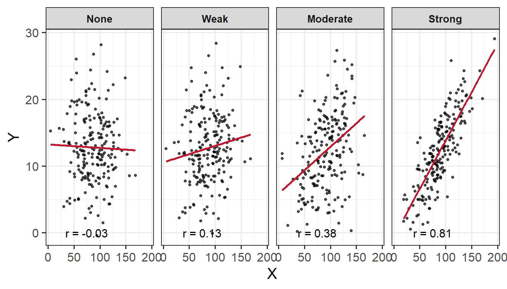
Direction
The sign of \(r\) says nothing about the strength of the association, but its nature and direction:
Positive association means that values of one variable tend to be higher when values of the other variable are higher
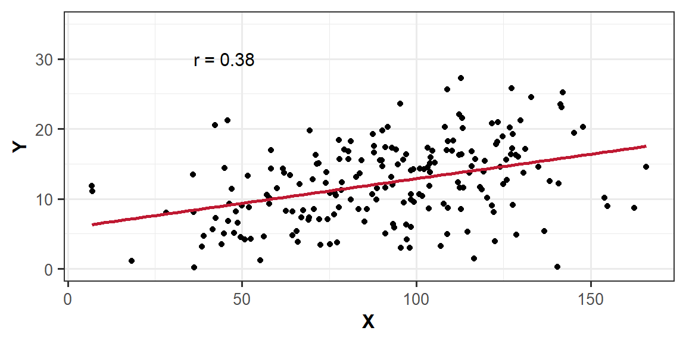
Negative association means that values of one variable tend to be lower when values of the other variable are higher
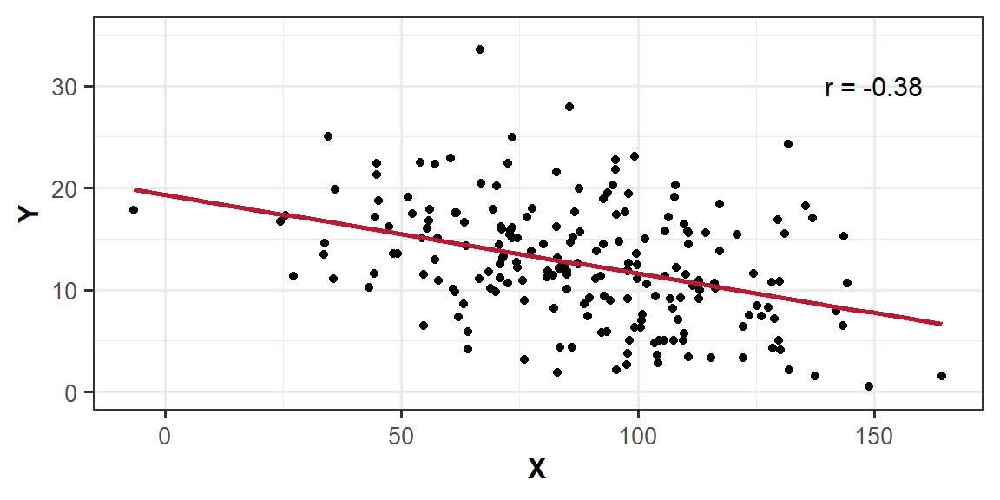
Correlation Matrix
A correlation matrix is a table showing the correlation coefficients between variables. Each cell in the table shows the association between two variables. The diagonals show the correlation of a variable with itself (and are therefore always equal to 1).
In R
We can create a correlation matrix by giving the cor() function a dataframe. It is important to remember that all variables must be numeric. One way to check this is by using the str() argument.
Let’s check the structure of the iris dataset to ensure that all variables are numeric:
We can see that the variable Species in column 5 is a factor - this means that we cannot include this in our correlation matrix. Therefore, we need to subset, or, in other words, select specific columns. We can do this either giving the column numbers inside [], or using select(). In our case, we want the variables in columns 1 - 4, just not 5.
If you had NA values within your dataset, you could choose to remove these NAs using na.rm = TRUE inside the cor() function.
# select only the columns we want by variable name, and pass this to cor()iris|>select(Sepal.Length, Sepal.Width, Petal.Length, Petal.Width)|>cor()|>round(digits =2)
The hypotheses of the correlation test are, as always, statements about the population parameter (in this case the correlation between the two variables in the population - i.e., \(\rho\)).
If we are conducting a two tailed test, then…
\(H_0: \rho = 0\). There is no linear association between \(x\) and \(y\) in the population
\(H_1: \rho \neq 0\) There is a linear association between \(x\) and \(y\)
If we instead conduct a one-tailed test, then we are testing either…
\(H_0: \rho \leq 0\) There is a negative or no linear association between \(x\) and \(y\)
\(H_1: \rho > 0\) There is a positive linear association between \(x\) and \(y\)
OR
\(H_0: \rho \geq 0\) There is a positive or no linear association between \(x\) and \(y\)
\(H_1: \rho < 0\) There is a negative linear association between \(x\) and \(y\)
Test Statistic
The test statistic for this test is the \(t\) statistic, the formula for which depends on both the observed correlation (\(r\)) and the sample size (\(n\)):
\[t = r \sqrt{\frac{n-2}{1-r^2}}\]
p-value
We calculate the \(p\)-value for our \(t\)-statistic as the long-run probability of a \(t\)-statistic with \(n-2\) degrees of freedom being less than, greater than, or more extreme in either direction (depending on the direction of our alternative hypothesis) than our observed \(t\)-statistic.
Assumptions
For a test of Pearson’s correlation coefficient \(r\), we need to make sure a few conditions are met:
Both variables are quantitative (i.e., continuous)
Both variables are drawn from normally distributed populations
The association between the two variables is linear
No extreme outliers in dataset
Homoscedasticity (homogeneity of variance)
Correlation - Hypothesis Testing in R
In R
We can test the significance of the correlation coefficient really easily with the function cor.test():
Pearson's product-moment correlation
data: iris$Sepal.Length and iris$Petal.Length
t = 21.646, df = 148, p-value < 2.2e-16
alternative hypothesis: true correlation is not equal to 0
95 percent confidence interval:
0.8270363 0.9055080
sample estimates:
cor
0.8717538
Note, by default, cor.test() will include only observations that have no missing data on either variable.
We can specify whether we want to conduct a one- or two-tailed test by adding the argument alternative = and specifying alternative = "less", alternative = "greater", or alternative = "two.sided" (the latter being the default).
Example Interpretation
There was a strong positive association between sepal length and petal length \((r = .87, t(148) = 21.65, p < .001)\). These results suggested that a greater sepal length was positively associated with a greater petal length.
Note
For a detailed recap of all things correlation (including further details and examples), revisit the Correlation lecture from DAPR1.
Visual Exploration
Visual exploration of our data allows us to visualize the distributions of our data, and to identify potential associations among variables.
How to Visualise Data
To visualise (i.e., plot) our data, we can use ggplot() from the tidyverse package. Note the key components of the ggplot() code:
data = where we provide the name of the dataframe
aes = where we provide the aesthetics. These are things which we map from the data to the graph. For instance, the \(x\)-axis, or if we wanted to colour the columns/bars according to some aspect of the data
+ geom_... = where we add (using +) some geometry. These are the shapes (e.g., bars, points, etc.), which will be put in the correct place according to what we specified in aes()
labs() = where we provide labels for our plot (e.g., the \(x\)- and \(y\)-axis)
Note
There are lots of arguments that you can further customise, some of which are specified in the examples below e.g., bins =, alpha =, fill =, linewidth =. linetype =, size = etc. For these, you can look up the helper function to see the range of arguments they can take using ? - e.g., ?fill.
One other thing to consider when visualising your data is how you are going to arrange your plots. Some handy tips on this:
Use to wrap text in your titles and or axis labels
The patchwork package allows us to arrange multiple plots in two ways - | arranges the plots adjacent to one another, and / arranges the plots on top of one another
“Density” is a bit similar to the notion of “relative frequency” (or “proportion”), in that for a density curve, the values on the y-axis are scaled so that the total area under the curve is equal to 1. In creating a curve for which the total area underneath is equal to one, we can use the area under the curve in a range of values to indicate the proportion of values in that range.
Unlike in our marginal plots where we specified our x-axis variable within aes(), to visualise bivariate associations, we need to specify what variables we want on both our x- and y-axis.
We can use a scatterplot (since the variables are numeric and continuous) to visualise the association between the two numeric variables - these will be our x- and y-axis values.
We plot these values for each row of our dataset, and we should end up with a cloud of scattered points.
Here we will want to comment on any key observations that we notice, including if we detect outliers or points that do not fit with the pattern in the rest of the data. Outliers are extreme observations that are not possible values of a variable or that do not seem to fit with the rest of the data. This could either be:
marginally along one axis: points that have an unusual (too high or too low) x-coordinate or y-coordinate
jointly: observations that do not fit with the rest of the point cloud
Basic:
We need to specify + geom_point() to get a scatterplot:
ggplot(data =iris, aes(x =Petal.Length, y =Sepal.Length))+geom_point()+labs(x ="Petal Length (in cm)", y ="Sepal Length (in cm)")
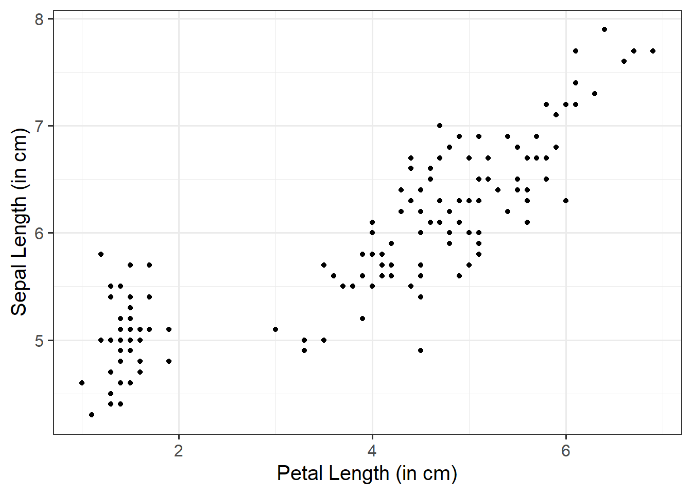
Fill Points with Color:
Within geom_point(), we can specify color = to fill the points with a color:
ggplot(data =iris, aes(x =Petal.Length, y =Sepal.Length))+geom_point(color ="darkred")+labs(x ="Petal Length (in cm)", y ="Sepal Length (in cm)")
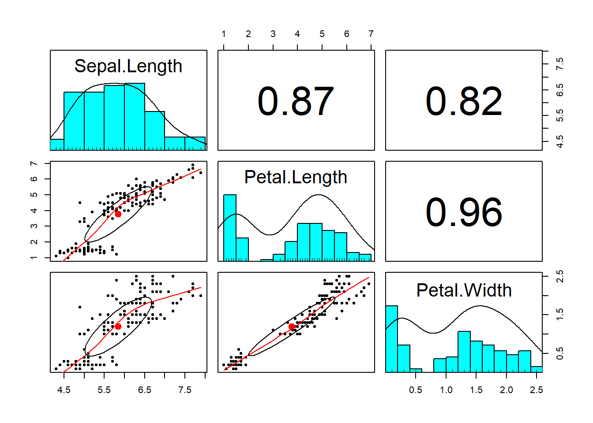
Change Size and Opacity:
We can change the size (using size =) and the opacity (using alpha =) of our geom elements on the plot. Let’s include this below:
ggplot(data =iris, aes(x =Petal.Length, y =Sepal.Length))+geom_point(size =3, alpha =0.5)+labs(x ="Petal Length (in cm)", y ="Sepal Length (in cm)")
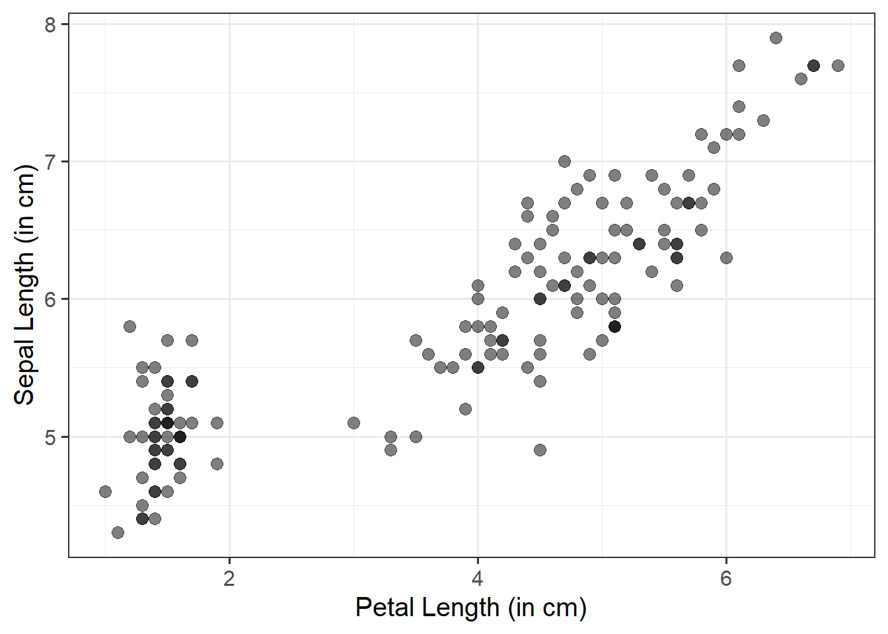
Add a Line of Best Fit:
We can superimpose (i.e., add) a line of best fit by including the argument + geom_smooth(). Since we want to fit a straight line, we want to use method = "lm". We can also specify whether we want to display confidence intervals around our line by specifying se = TRUE / FALSE.
ggplot(data =iris, aes(x =Petal.Length, y =Sepal.Length))+geom_point()+geom_smooth(method ="lm", se =FALSE)+labs(x ="Petal Length (in cm)", y ="Sepal Length (in cm)")
Using pairs.panels() is likely the most useful way to visualise the associations among numeric variables. It returns a scatterplot of matrices (SPLOM) returning you (1) the marginal distribution of each variable via a histogram, (2) the correlation between variables, and (3) bivariate scatterplots.
To visualise multivariate associations, just like we do for bivariate associations, we need to specify what variables we want on both our x- and y-axis. We also need to take an extra step by specifying a third variable - z - that acts as a differentiating factor across our data. This ‘z’ can be mapped to an aesthetic attribute such as color, shape, or size, allowing us to explore more dynamic patterns and ssociations in our data.
If you really wanted to, you could create a plot showing the associations among three variables at once. These are likely more useful when you have an interaction model. However, we wouldn’t really recommend doing this - they can be very difficult to interpret correctly, and given their interactive nature, definitely NOT something that you’d want to include in a stats report. But, for demonstration purposes only, we could create one using the plotly package.
3D Scatterplot
library(plotly)plot_ly(data =iris, x =~Petal.Length, y =~Sepal.Length, z =~Petal.Width, type ='scatter3d', mode ='markers+lines', scene =list( xaxis =list(title ="Petal Length"), yaxis =list(title ="Sepal Length"), zaxis =list(title ="Petal Width")))
Heatmap of Correlations
plot_ly(z =~cor(iris[, c(1, 3:4)]), type ="heatmap")
Functions and Mathematical Models
Basic functions and mathematical models are foundational tools used to describe and predict associations between variables.
Identification & Specification
Consider the function \(y = 2 + 5 \ x\). From this, we can do the following:
Identify the Dependent Variable (DV)
Identify the Independent Variable (IV)
Describe in words what the function does, and compute the output for the following input:
\[
x = \begin{bmatrix}
2 \\
6
\end{bmatrix}
\]
The function says that the \(y\) value is obtained as a transformation of the \(x\) value.
The dependent variable is \(y\)
The independent variable is \(x\)
The \(y\) value is calculated as two plus five times \(x\)
Example (1): If \(x\) equals 2, the corresponding value of \(y\) will be \(2 + (5 \cdot 2) = 12\). Example (2): If \(x\) equals 6, the corresponding value of \(y\) will be \(2 + (5 \cdot 6) = 32\).
We come across functions a lot in daily life, and probably don’t think much about it. In a slightly more mathematical setting, we can write down in words and in symbols the function describing the association between the side of a square and its perimeter (e.g., to capture how the perimeter varies as a function of its side). In this case, the perimeter is the dependent variable, and the side is the independent variable.
This is what we would refer to as a deterministic model, as it is a model of an exact relationship - there can be no deviation.
The perimeter of a square is four times the length of its side.
The relationship between side and perimeter of squares is given by:
\[
\text{Perimeter} = 4 \cdot \text{Side}
\]
If you denote \(y\) as the dependent variable Perimeter, and \(x\) as the independent variable Side we can rewrite as:
\[
y = 4 \cdot x
\]
Visualisation
Let’s create a dataset called squares, containing the perimeter of four squares having sides of length \(0, 2, 5, 9\) metres, and then plot the squares data as points on a scatterplot.
First, let’s make our squares data. Here we will use two important functions - tibble() and c(). The tibble() function allows us to construct a data frame. To store a sequence of numbers into R, we can combine the values using c(). A sequence of elements all of the same type is called a vector.
#create data frame named squaressquares<-tibble( side =c(0, 2, 5, 9), perimeter =4*side)#check that our values are contained within squaressquares
Now we know how ggplot() works, we can start to build our plot. First we specify our data (we want to use the squares data frame), and then our aesthetics. Since the perimeter varies as a function of side, we want side on the \(x\)-axis, and perimeter on the \(y\)-axis. We want to create a scatterplot, so we need to specify our geom_... argument as geom_point(). Lastly, we will provide clearer axis labels, and include the units of measurement.
ggplot(data =squares, aes(x =side, y =perimeter))+geom_point()+labs(x ='Side (m)', y ='Perimeter (m)', title ='Perimeter = 4*Side')
Figure 3: Perimeter = 4*Side
We could also visualise the functional relationship by connecting the individual points with a line. To do so, we need to add a new argument - geom_line(). If you would like to change the colour of the line from the default, you can specify geom_line(colour = "insert colour name").
ggplot(data =squares, aes(x =side, y =perimeter))+geom_point()+geom_line(colour ="darkred")+labs(x ='Side (m)', y ='Perimeter (m)', title ='Perimeter = 4*Side')
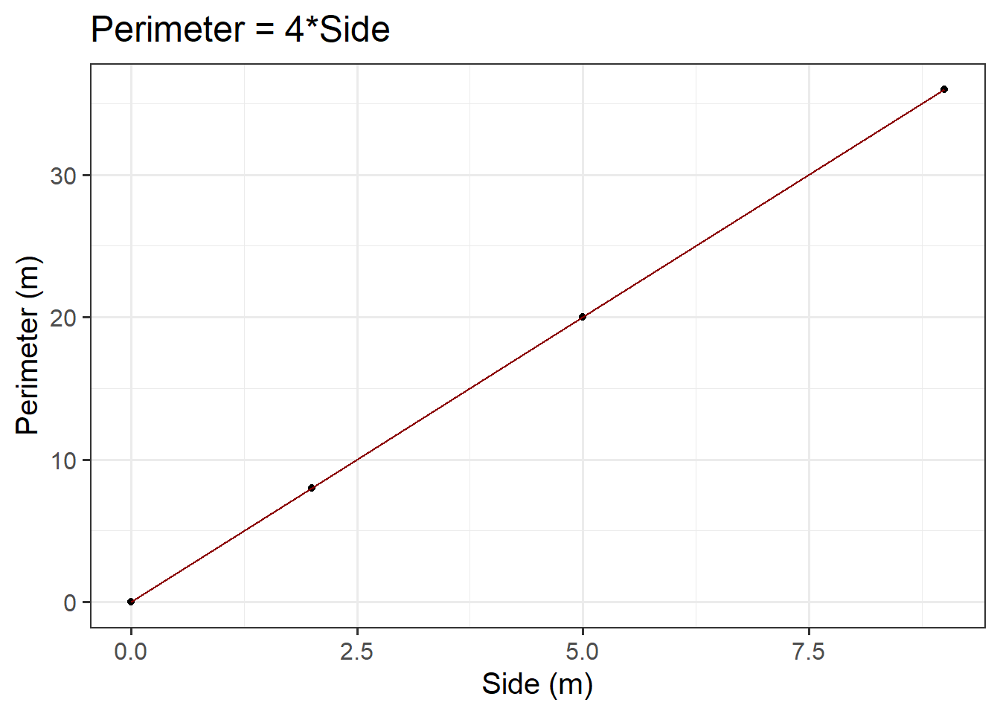
Figure 4: Perimeter = 4*Side
Predicted Values
Sometimes we can directly read a predicted value from the graph of the functional relationship.
Consider the plot created above. For example, first we need to check where \(x\) = 2.5. Then, we draw a vertical dashed line until it meets the blue line. The \(y\) value corresponding to \(x\) = 2.5 can be read off the \(y\)-axis. In our case, we would say a side of 2.5m corresponds to a perimeter of 10m.
ggplot(data =squares, aes(x =side, y =perimeter))+geom_point()+geom_line(colour ="blue")+geom_vline(xintercept =2.5, colour ="darkred", lty ="dashed", lwd =1)+labs(x ='Side (m)', y ='Perimeter (m)', title ='Perimeter = 4 * Side')
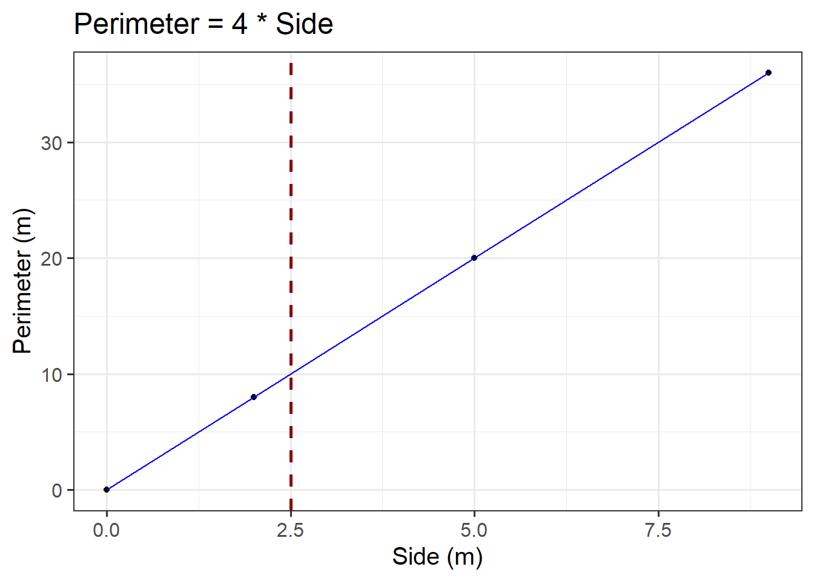
Figure 5: Perimeter = 4*Side
However, in this case it is not that easy to read it from Figure 5 (especially without the superimposed dashed red line)… This leads us to the algebraic approach:
We can substitute the \(x\) value in the formula and calculate the corresponding \(y\) value where we would conclude that the predicted perimeter of squared paintings having a 2.5m side is 10m:
\[
y = 4 \cdot x \\
\]
\[
y = 4 \cdot 2.5 \\
\]
\[
y = 10 \\
\]
Statistical Models
Statistical models are used to understand the associations among variables.
Specifying Hypotheses
We need to specify our hypotheses when testing a model as this not only defines what we are testing, but also sets the direction for statistical inference. By specifying a null hypothesis (typically stating no effect or no association) and an alternative hypothesis (indicating the presence of an association), we create a structured approach for determining the statistical significance of model parameters. Without specifying hypotheses, the interpretation of results would lack focus, making it difficult to assess the validity and relevance of the model’s findings.
In regression analysis, hypothesis testing for beta coefficients is used to assess whether (each) predictor variable significantly contributes to the model.
The way we specify hypotheses is similar across simple and multiple regression models.
For each regression coefficient \(\beta_j\) (for predictor \(X_j\)):
Null hypothesis (\(H_0\)) = \(\beta_j = 0\): The predictor variable (\(X_j\)) is not associated with the DV
Alternative hypothesis (\(H_1\)) = \(\beta_j \neq 0\): The predictor variable (\(X_j\)) is associated with the DV
Based on the \(p\)-value or comparison of the \(t\)-statistic with the critical value, you can conclude whether the predictor variable is significant or not (see the simple & multiple regression Models - extracting information > model coefficients flashcard below):
Reject \(H_0\) if \(|t_j|\) > critical value or \(p\)-value \(< \alpha\)
Fail to reject \(H_0\) if \(|t_j|\)\(\leq\) critical value or \(p\)-value \(\geq \alpha\)
Numeric Outcomes & Numeric Predictors
Simple Linear Regression Models
Description & Model Specification
The association between two variables (e.g., recall accuracy and age) will show deviations from the ‘average pattern’. Hence, we need to create a model that allows for deviations from the linear relationship - we need a statistical model.
A statistical model includes both a deterministic function and a random error term. We typically refer to the outcome (‘dependent’) variable with the letter \(y\) and to our predictor (‘explanatory’/‘independent’) variables with the letter \(x\). A simple (i.e., one x variable only) linear regression model thus takes the following form (where the terms \(\beta_0\) and \(\beta_1\) are numbers specifying where the line going through the data meets the y-axis (i.e., the intercept - where \(x\) = 0; \(\beta_0\)) and its slope (direction and gradient of line; \(\beta_1\)):
\(N(0, \sigma) \text{ independently}\) means ‘normal distribution with a mean of 0 and a variance of \(\sigma\)’
Together, we can say that the errors around the line have a mean of zero and constant spread as x varies
In R
There are basically two pieces of information that we need to pass to the lm() function:
The formula: The regression formula should be specified in the form y ~ x where \(y\) is the dependent variable (DV) and \(x\) the independent variable (IV).
The data: Specify which dataframe contains the variables specified in the formula.
In R, the syntax of the lm() function can be specified as follows (where DV = dependent variable, IV = independent variable, and data_name = the name of your dataset):
When we specify the linear model in R, we include after the tilde sign (\(\sim\)), the variables that appear to the right of the \(\hat \beta\)s. The intercept, or \(\beta_0\), is a constant. That is, we could write it as multiplied by 1.
Including the 1 explicitly is not necessary because it is included by default (you can check this by comparing the outputs of A & B above with and without the 1 included - the estimates are the same!). After a while, you will find you just want to drop the 1 when calling lm() because you know that it’s going to be there, but in these early weeks we tried to keep it explicit to make it clear that you want the intercept to be estimated.
Example
Research Question
Is there an association between recall accuracy and age?
Overview
Imagine that you were tasked to investigate whether there was an association between recall accuracy and age. You have been provided with data from twenty participants who studied passages of text (c500 words long), and were tested a week later. The testing phase presented participants with 100 statements about the text. They had to answer whether each statement was true or false, as well as rate their confidence in each answer (on a sliding scale from 0 to 100). The dataset contains, for each participant, the percentage of items correctly answered, their age (in years), and their average confidence rating.
For the marginal distributions we will use density and boxplots, and for the bivariate associations a scatterplot.
#save plots to individual objects in order to arrange plt1<-ggplot(data =recalldata, aes(x =recall_accuracy))+geom_density()+xlim(0, 100)+#specify x-axis to range from 0-100geom_boxplot(width =1/100)+labs(x ="Recall Accuracy (%)", title ="Distribtion of \nRecall Accuracy")plt2<-ggplot(data =recalldata, aes(x =age))+geom_density()+xlim(0, 100)+#specify x-axis to range from 0-100geom_boxplot(width =1/100)+labs(x ="Age (in years)", title ="Distribtion of \nAge")plt3<-ggplot(data =recalldata, aes(x =age, y =recall_accuracy))+geom_point()+labs(x ="Age (in years)", y ="Recall Accuracy (%)", title ="Association between Recall Accuracy and Age")#load patchwork package to arrange plotslibrary(patchwork)#arrange plots where there are two plots in to panel (plt1 + plt2), one on bottom (plt3)(plt1+plt2)/plt3
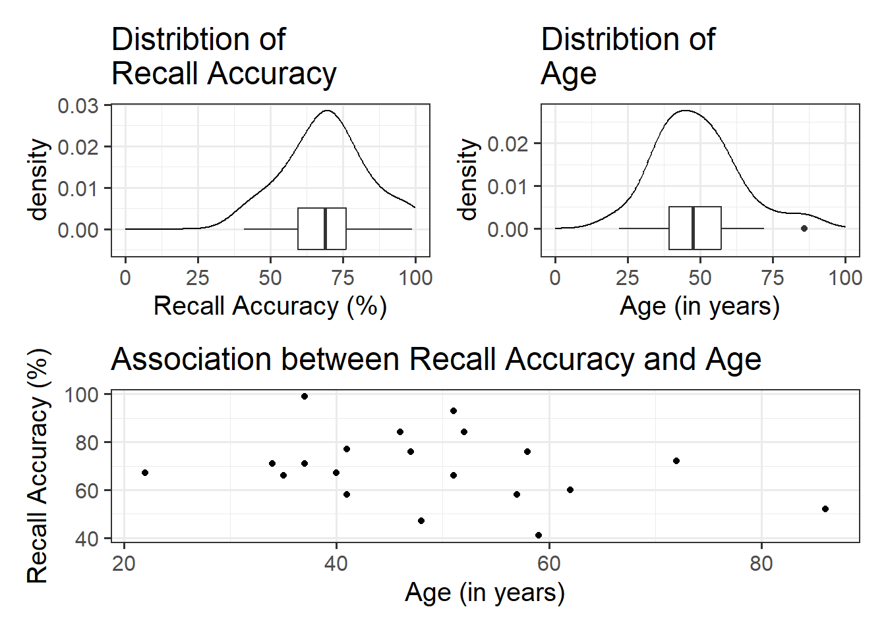
The marginal distribution of recall accuracy was unimodal with a negative skew with a mean of approximately 69.25. There was high variation in recall accuracy (SD = 14.53)
The marginal distribution of age was unimodal with a mean of approximately 48.8, where age ranged from 22 to 86
There appeared to be a weak negative association between recall accuracy and age, where older age was associated with lower recall accuracy
There is no association between recall accuracy and age.
\(H_1: \beta_1 \neq 0\)
There is an association between recall accuracy and age.
Model Building
To fit the model in R we use the lm() function. The simple linear model is assigned/stored in an object called recall_simp:
recall_simp<-lm(recall_accuracy~age, data =recalldata)
recall_simp
Call:
lm(formula = recall_accuracy ~ age, data = recalldata)
Coefficients:
(Intercept) age
84.0153 -0.3026
When we call the name of the fitted model, recall_simp, you can see the estimated regression coefficients \(\hat \beta_0\) and \(\hat \beta_1\). The line of best-fit is thus given by:1
The intercept, or predicted recall accuracy when age was 0.
An individual aged 0 years was expected to have a recall accuracy of \(84.02\).
Note: the intercept isn’t very useful here at all. It estimates the accuracy for a newborn (who wouldn’t be able to complete the task!).
\(\beta_1\) = age = -0.3
The estimated difference in recall accuracy for each additional year in age.
Every 1 additional year in age was associated with a non-significant \(-0.3\) percentage point decrease in recall accuracy \((p = .196)\). This suggested that age was not significantly associated with recall accuracy.
Model Visualisation
ggplot(recalldata, aes(x =age, y =recall_accuracy))+geom_point(size =3, alpha =0.5)+geom_smooth(method =lm, se =FALSE)+ylim(0,100)+labs(x ="Age (in years)", y ="Recall Accuracy (%)", title ="Association between Recall Accuracy and Age")
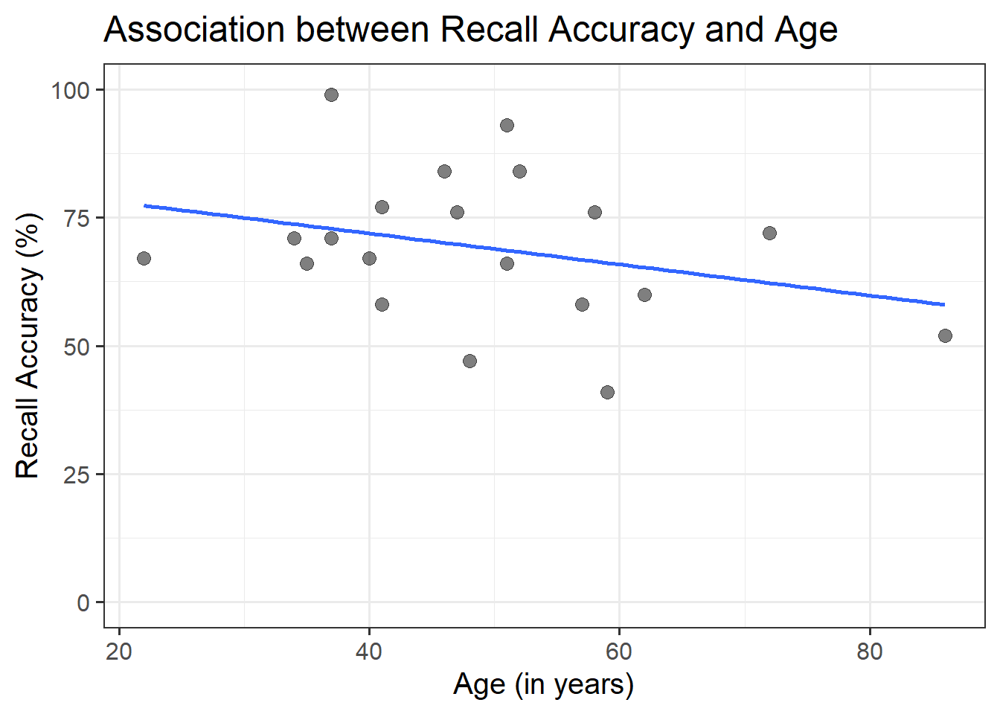
Figure 6: Association between Recall Accuracy and Age
The line that best fits the association between recall accuracy and age (see Figure 6) is only able to predict the average accuracy for a given value of age.
This is because there will be a distribution of recall accuracy at each value of age. The line will fit the trend/pattern in the values, but there will be individual-to-individual variability that we must accept around that average pattern.
Multiple Linear Regression Models
Description & Model Specification
Multiple linear regression involves looking at one continuous outcome (i.e., DV), with two or more independent variables (i.e., IVs).
A multiple linear regression model takes the following form:
Multiple and simple linear regression follow the same structure within the lm() function - the logic scales up to however many predictor variables we want to include in our model. You simply add (using the + sign) more independent variables. For example, if we wanted to build a multiple linear regression that included three independent variables, we could fit one of the following via the lm() function:
You’ll hear a lot of different ways that people explain multiple regression coefficients.
For the model \(y = \beta_0 + \beta_1 \cdot x_1 + \beta_2 \cdot x_2 + \epsilon\), the estimate \(\hat \beta_1\) will often be reported as:
“the increase in \(y\) for a one unit increase in \(x_1\) when…”
“holding the effect of \(x_2\) constant.”
“controlling for differences in \(x_2\).”
“partialling out the effects of \(x_2\).”
“holding \(x_2\) equal.”
“accounting for effects of \(x_2\).”
For models with 3+ predictors, just like building the model in R, the logic of the above simply extends.
For example “the increase in [outcome] for a one unit increase in [predictor] when…”
“holding [other predictors] constant.”
“accounting for [other predictors].”
“controlling for differences in [other predictors].”
“partialling out the effects of [other predictors].”
“holding [other predictors] equal.”
“accounting for effects of [other predictors].”
Example
Research Question
Is recall accuracy associated with recall confidence and age?
Overview
Imagine that you were tasked to investigate whether recall accuracy was associated with recall confidence and age. You have been provided with data from twenty participants who studied passages of text (c500 words long), and were tested a week later. The testing phase presented participants with 100 statements about the text. They had to answer whether each statement was true or false, as well as rate their confidence in each answer (on a sliding scale from 0 to 100). The dataset contains, for each participant, the percentage of items correctly answered, their age (in years), and their average confidence rating.
The intercept, or predicted recall accuracy when recall confidence was 0 and age was 0.
An individual aged 0 years with no recall confidence was expected to have a recall accuracy of \(36.16\).
Note: the intercept isn’t very useful here at all. It estimates the accuracy for a newborn (who wouldn’t be able to complete the task!).
\(\beta_1\) = recall_confidence = 0.9
The estimated difference in recall accuracy for each additional unit increase in confidence controlling for age.
Holding age constant, each 1 additional unit in recall confidence was associated with a significant \(0.9\) percentage point increase in recall accuracy \((p < .001)\).
\(\beta_2\) = age = -0.34
The estimated difference in recall accuracy for each additional year in age controlling for recall confidence.
Holding recall confidence constant, every 1 additional year in age was associated with a significant \(-0.34\) percentage point decrease in recall accuracy \((p = .041)\).
Model Visualisation
When we have 2+ predictors, we can’t just plot our data an add geom_smooth(method=lm), because that would give a visualisation of a linear model with just one predictor (whichever one is on the \(x\)-axis).
Instead, we can use the function plot_model() from sjPlot.
plot_model(recall_multi, type ="eff", terms ="recall_confidence", show.data =TRUE)plot_model(recall_multi, type ="eff", terms ="age", show.data =TRUE)
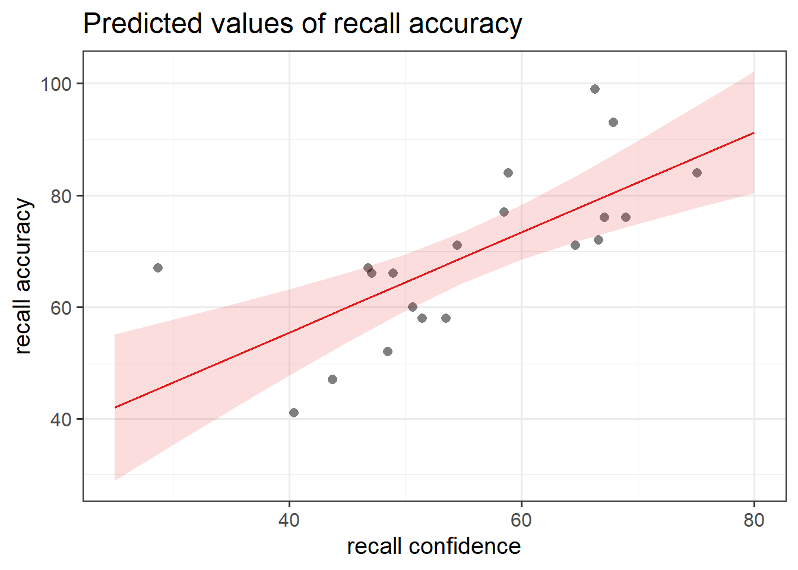
Figure 8: Association between Recall Accuracy, Recall Confidence, and Age
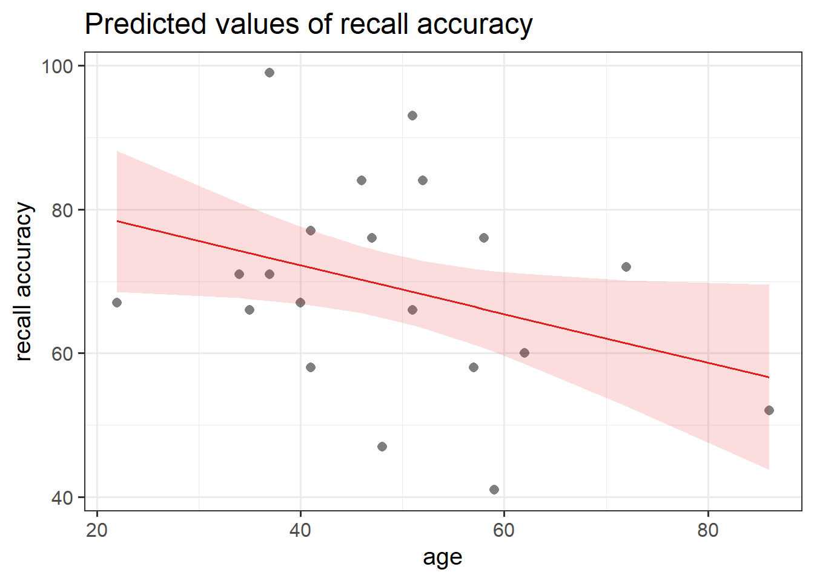
Figure 9: Association between Recall Accuracy, Recall Confidence, and Age
General - Extracting Information
It is important to have a good grasp of how to understand and interpret the key components of your model summary() output, including model coefficients, standard errors, \(t\)-values, \(p\)-values, etc., and how these can be used in further calculations (such as confidence intervals). As well as knowing how to extract from R, it is necessary to understand how to compute some of these statistics by hand too.
Model Call
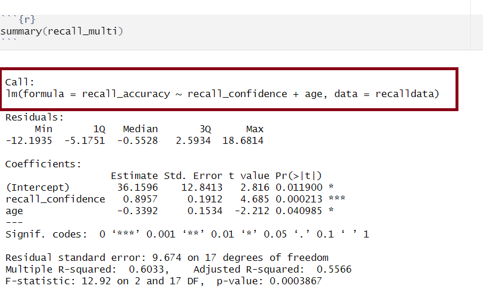
Multiple regression output in R, model formula highlighted
The call section at the very top of the summary() output shows us the formula that was specified in R to fit the regression model.
In the above, we can see that recall accuracy is our DV, recall confidence and age were our two IVs, and our dataset was named recalldata.
Residuals
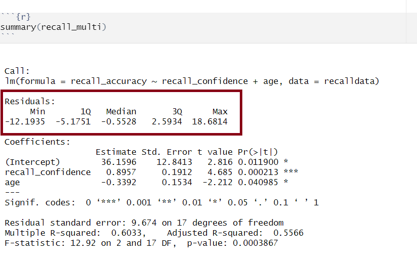
Multiple regression output in R, residuals highlighted
Residuals are the difference between the observed values and model predicted values of the DV.
Ideally, for the model to be unbiased, we want our median value (the middle value of the residuals when ordered) to be around 0, as this would show that the errors are random fluctuations around the true line. When this is the case, we know that our model is doing a good job predicting values at the high and low ends of our dataset, and that our residuals were somewhat symmetrical.
Model Coefficients
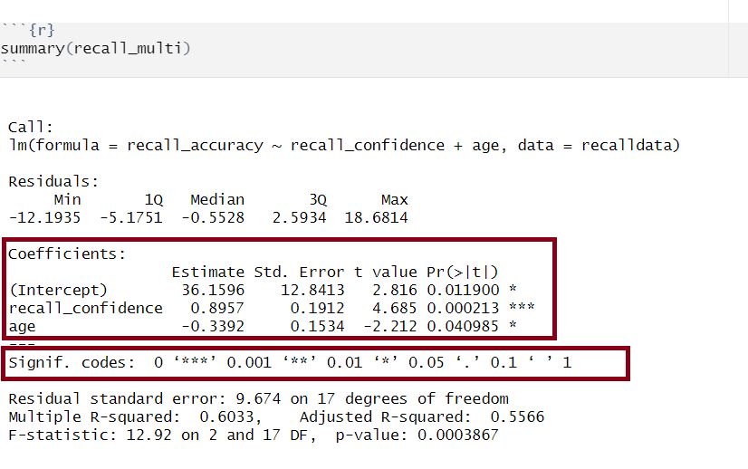
Multiple regression output in R, model coefficients highlighted
Let’s apply to a straightforward example to try by-hand. Suppose you have a simple linear regression model (i.e., with only one IV) where you have the following data points:
Observed \(x_i\)
Observed \(y_i\)
1
5
2
7
3
8
4
6
5
9
Step 1: Calculate mean of both \(x\) and \(y\)
\(\bar x = {\frac{1+2+3+4+5}{5}} = 3\)
\(\bar y = {\frac{5+7+8+6+9}{5}} = 7\)
Step 2: Calculate \(\beta_0\) and \(\beta_1\)
We need to calculate the slope first, as we need to know the value of \(\beta_1\) in order to calculate \(\beta_0\)
There are numerous equivalent ways to obtain the estimated regression coefficients — that is, \(\hat \beta_0\), \(\hat \beta_1\), …., \(\hat \beta_k\) — from the fitted model (for this below example, our fitted model has been named mdl):
mdl
mdl$coefficients
coef(mdl)
coefficients(mdl)
The standard error of the coefficient is an estimate of the standard deviation of the coefficient (i.e., how much uncertainty there is in our estimated coefficient).
The formula for the standard error of the slope is:
\[
\begin{align}
& SE(\hat \beta_j) = \sqrt{\frac{\text{SS}_\text{Residual}/(n-k-1)}{\sum(x_{ij} - \bar{x_{j}})^2(1-R_{xj}^2)}} \\
\\
& \text{Where}: \\
\\
& \text{SS}_\text{Residual} = \text{ residual sum of squares} \\
& n = \text{ sample size} \\
& k = \text{ number of predictors} \\
& x_{ij} = \text{ the observed value of a predictor (j) for an individual (i)} \\
& \bar{x_{j}} = \text{the mean of a predictor (j)} \\
& R_{xj}^2 = \text{the multiple correlation coefficient of the predictors} \\
\end{align}
\]
Let’s apply to a straightforward example. Suppose you have a simple linear regression model (i.e., with only one IV, which means that \(R_{xj}^2 = 0\) since there is only one predictor) and the following data points:
Observed \(x_i\)
Observed \(y_i\)
1
5
2
7
3
8
4
6
5
9
There are a number of steps you need to take to calculate by hand:
Calculate sum of the squared residuals
Calculate predicted values
Calculate residuals (i.e., the difference between the observed value (\(y_i\)) and the predicted value (\(\hat{y}_i\)) for each observation)
Square the residuals
Calculate the Sum of Squared Residuals
Calculate the sum of squared deviations of the (\(x\)) values from their mean
Use values from 1 & 2 to calculate \(SE(\hat \beta_j)\)
Step 1.1: Calculate predicted values
Using \(\hat{y}_i = \beta_0 + \beta_1 \cdot x_i\) and our model coefficients \(\beta_0 = 4.9\) and \(\beta_1 = 0.7\):
Step 2. Calculate the sum of squared deviations of the (\(x\)) values from their mean
The mean of \(x\) can be calculated as: \(\bar x = {\frac{1+2+3+4+5}{5}} = 3\). Using this, we can then calculate the sum of squared deviations of \(x\):
If you wanted to obtain just the standard error for each estimated regression coefficient, you could do the following (for this below example, our fitted model has been named mdl):
summary(mdl)$coefficients[,2]
The t-statistic is the \(\beta\) coefficient divided by the standard error:
\[
t = \frac{\hat \beta_j - 0}{SE(\hat \beta_j)}
\]
which follows a \(t\)-distribution with \(n-k-1\) degrees of freedom (where \(k\) = number of predictors and \(n\) = sample size).
With this, we can test the the null hypothesis \(H_0: \beta_j = 0\).
Generally speaking, you want your model coefficients to have large \(t\)-statistics as this would indicate that the standard error was small in comparison to the coefficient. The larger our \(t\)-statistic, the more confident we can be that the coefficient is not 0.
How to calculate \(t = \frac{\hat \beta_j - 0}{SE(\hat \beta_j)}\)
(Intercept) recall_confidence age
2.815890 4.684654 -2.211515
From our \(t\)-value, we can compute our \(p\)-value. The \(p\)-value help us to understand whether our coefficient(s) are statistically significant (i.e., that the coefficient is statistically different from 0). The \(p\)-value of each estimate indicates the probability of observing a \(t\)-value at least as extreme as, or more extreme than, the one calculated from the sample data when assuming the null hypothesis to be true.
In Psychology, a \(p\)-value < .05 is usually used to make statements regarding statistical significance (it is important that you always state your \(\alpha\) level to help your reader understand any statements regarding statistical significance).
The number of asterisks marks corresponds with the significance of the coefficient (see the ‘Signif. codes’ legend just under the coefficients section).
In R
If you wanted to obtain just the \(p\)-values for each estimated regression coefficient, you could do the following (for this below example, our fitted model has been named mdl):
summary(mdl)$coefficients[,4]
Confidence Intervals
Using the estimate and standard error of a given \(\beta\) coefficient, we can create confidence intervals to estimate a plausible range of values for the true population parameter. Recall the formula for obtaining a confidence interval for the population slope is:
\[
\hat \beta_j \pm t^* \cdot SE(\hat \beta_j)
\]
where \(t^*\) denotes the critical value chosen from \(t\)-distribution with \(n-k-1\) degrees of freedom (where \(k\) = number of predictors and \(n\) = sample size) for a desired \(\alpha\) level of confidence.
How to calculate \(\hat \beta_j \pm t^* \cdot SE(\hat \beta_j)\)
Multiple regression output in R, model standard deviation of the errors highlighted
The standard deviation of the errors, denoted by \(\sigma\), is an important quantity that our model estimates. It represents how much individual data points tend to deviate above and below the regression line - in other words, it tells us how well the model fits the data.
A small \(\sigma\) indicates that the points hug the line closely and we should expect fairly accurate predictions, while a large \(\sigma\) suggests that, even if we estimate the line perfectly, we can expect individual values to deviate from it by substantial amounts.
The estimated standard deviation of the errors is denoted \(\hat \sigma\), and is estimated by essentially averaging squared residuals (giving the variance) and taking the square-root:
There are a couple of equivalent ways to obtain the estimated standard deviation of the errors — that is, \(\hat \sigma\) — from the fitted model (for this example, our fitted model has been named mdl):
sigma(mdl)
summary(mdl)
Model Predicted Values & Residuals
Model predicted values are the estimates generated by a regression model for the dependent variable based on the independent variable(s), whilst residuals are the differences between these predicted values and the actual observed values (in turn indicating the accuracy of the model’s predictions).
Predicted Values
Model predicted values (\(\hat y_i\)) for sample data
We can get out the model predicted values for \(y\), the “y hats” (\(\hat y\)), for the data in the sample using various functions:
predict(<fitted model>)
fitted(<fitted model>)
fitted.values(<fitted model>)
mdl$fitted.values
For example, this will give us the estimated recall accuracy (point on our regression line) for each observed value of age for each of our 20 participants.
Model predicted values for other (unobserved) data
To compute the model-predicted values for unobserved data (i.e., data not contained in the sample), we can use the following function:
predict(<fitted model>, newdata = <dataframe>)
For this example, we first need to remember that the model predicts recall_accuracy using the independent variable age. Hence, if we want predictions for new (unobserved) data, we first need to create a tibble with a column called age containing the age of individuals for which we want the prediction, and store this as a dataframe.
#Create dataframe 'newdata' containing the age values of 19, 32, and 99newdata<-tibble(age =c(19,32,99))newdata
# A tibble: 3 × 1
age
<dbl>
1 19
2 32
3 99
Then we take newdata and add a new column called accuracy_hat, computed as the prediction from the fitted recall_simp using the newdata above:
# A tibble: 3 × 2
age accuracy_hat
<dbl> <dbl>
1 19 78.3
2 32 74.3
3 99 54.1
Residuals
The residuals (\(\hat \epsilon_i\)) represent the deviations between the actual responses and the predicted responses and can be obtained either as
mdl$residuals
resid(mdl)
residuals(mdl)
computing them as the difference between the response (\(y_i\)) and the predicted response (\(\hat y_i\))
Predicted Values - Example
Lets estimate (or predict) recall accuracy of two individuals with the following ages (a) 18, and (b) 118. There are a few ways we can do this, but first, let’s recall our fitted model:
We can see that both approaches (manually substituting values into the regression equation or using the predict() function) both give us the same values (slightly different due to rounding).
But, be careful to not go too far off the range of the available data (I don’t know many 118 year olds, do you?). If you do, you will extrapolate. This is very dangerous…
Source: Randall Munroe, xkcd.com
Data Transformations
There are many transformations we can do to a continuous variable, but the most common ones are centering and scaling. These transformations can help to aid interpretability of our statistical models.
Centering
Centering simply means moving the entire distribution to be centered on some new value. We achieve this by subtracting our desired center from each value of a variable.
A common option is to mean center (i.e. to subtract the mean from each value). This makes our new values all relative to the mean. We can center a variable on other things, such as the minimum or maximum value of the scale we are using, or some judiciously chosen value of interest.
model<-lm(scale(DV, scale =FALSE)~scale(IV, scale =FALSE), data =data_name)
Scaling
Scaling changes the units of the variable, and we do this by dividing the observations by some value. E.g., moving from “36 months” to “3 years” involves multiplying (scaling) the value by 1/12.
The most common transformation that involves scaling is called standardisation.
Standardisation
This involves subtracting the mean from each individual observation (i.e., calculating individual deviations) and then dividing by the standard deviation. So standardisation centers on the sample mean and scales by the sample standard deviation.
Recall that a standardized variable has mean of 0 and standard deviation of 1. If both\(x\) and \(y\) are standardised, our model coefficients (\(\beta\)’s) are standardised too.
When we standardise variables in a regression model, it means we can talk about all our coefficients in terms of “standard deviation units”. To the extent that it is possible to do so, this puts our coefficients on scales of the similar magnitude, making qualitative comparisons between the sizes of effects a little more easy.
We tend to refer to coefficients using standardised variables as (unsurprisingly), “standardised coefficients”
There are two main ways that people construct standardised coefficients. One of which standardises just the predictor, and the other of which standardises both predictor and outcome:
predictor
outcome
in lm
coefficient
interpretation
standardised
raw
y ~ scale(x)
\(\beta = b \cdot s_x\)
“difference in Y for a 1 SD increase in X”
standardised
standardised
scale(y) ~ scale(x)
\(\beta = b \cdot \frac{s_x}{s_y}\)
“difference in SD of Y for a 1 SD increase in X”
Model Fit
Linear Models
Assessing model fit involves examining metrics like the sum of squares to measure variability explained by the model, the \(F\)-ratio to evaluate the overall significance of the model by comparing explained variance to unexplained variance, and \(R\)-squared / Adjusted \(R\)-squared to quantify the proportion of variance in the dependent variable explained by the independent variable(s).
Sums of Squares
To quantify and assess a model’s utility in explaining variance in an outcome variable, we can split the total variability of that outcome variable into two terms: the variability explained by the model plus the variability left unexplained in the residuals.
The sum of squares measures the deviation or variation of data points away from the mean (i.e., how spread out are the numbers in a given dataset). We are trying to find the equation/function that best fits our data by varying the least from our data points.
Total Sum of Squares
Formula:
\[
\text{SS}_\text{Total} = \sum_{i=1}^{n}(y_i - \bar{y})^2
\] Can also be derived from:
Squared distance of each data point from the mean of \(y\).
Description:
How much variation there is in the DV.
Example:
Let’s apply to a straightforward example to try by-hand. Suppose you have a simple linear regression model (i.e., with only one IV) where you have the following data points:
Observed \(x_i\)
Observed \(y_i\)
1
5
2
7
3
8
4
6
5
9
Steps:
Calculate the mean of \(y\) (\(\bar y\))
Calculate for each observation \(y_i\) - \(\bar y\)
Square each of the obtained \(y_i\) - \(\bar y\) values
Sum squared values
Step 1: Calculate the mean of \(y_i\)
\(\bar y = {\frac{5+7+8+6+9}{5}} = 7\)
Step 2 & 3: Calculate for each observation \(y_i\) - \(\bar y\) & square values
Squared distance of each point from the predicted value.
Description:
How much of the variation in the DV the model did not explain - a measure that captures the unexplained variation in your regression model. Lower residual sum of squares suggests that your model fits the data well, and higher suggests that the model poorly explains the data (in other words, the lower the value, the better the regression model). If the value was zero here, it would suggest the model fits perfectly with no error.
Example:
Let’s apply to a straightforward example to try by-hand. Suppose you have a simple linear regression model (i.e., with only one IV) where you have the following data points:
Observed \(x_i\)
Observed \(y_i\)
1
5
2
7
3
8
4
6
5
9
Steps:
Calculate predicted values (\(\hat{y}_i\))
Calculate residuals (i.e., the difference between the observed value (\(y_i\)) and the predicted value (\(\hat{y}_i\)) for each observation)
Square the residuals
Sum squared values
Step 1: Calculate predicted values
Using \(\hat{y}_i = \beta_0 + \beta_1 \cdot x_i\) and our model coefficients \(\beta_0 = 4.9\) and \(\beta_1 = 0.7\):
The deviance of the predicted scores from the mean of \(y\).
Description:
How much of the variation in the DV your model explained - like a measure that captures how well the regression line fits your data.
Example:
Let’s apply to a straightforward example to try by-hand. Suppose you have a simple linear regression model (i.e., with only one IV) where you have the following data points:
Observed \(x_i\)
Observed \(y_i\)
1
5
2
7
3
8
4
6
5
9
Steps:
Calculate mean of \(y\) (\(\bar y\))
Calculate predicted values (\(\hat{y}_i\))
Calculate for each observation \(\hat{y}_i - \bar y\)
Squaring each of the obtained \(\hat{y}_i - \bar y\) values
Sum squared values
Step 1: Calculate the mean of \(y_i\)
\(\bar y = {\frac{5+7+8+6+9}{5}} = 7\)
Step 2: Calculate predicted values
Using \(\hat{y}_i = \beta_0 + \beta_1 \cdot x_i\) and our model coefficients \(\beta_0 = 4.9\) and \(\beta_1 = 0.7\):
Observed (\(x_i\))
Observed (\(y_i\))
Predicted (\(\hat{y}_i\))
1
5
\(4.9 + (0.7*1) = 5.6\)
2
7
\(4.9 + (0.7*2) = 6.3\)
3
8
\(4.9 + (0.7*3) = 7\)
4
6
\(4.9 + (0.7*4) = 7.7\)
5
9
\(4.9 + (0.7*5) = 8.4\)
Step 3 & 4: Calculate for each observation \(\hat{y}_i\) - \(\bar y\) & square values
We can perform a test to investigate if a model is ‘useful’ — that is, a test to see if our explanatory variable explains more variance in our outcome than we would expect by just some random chance variable.
With one predictor, the \(F\)-statistic is used to test the null hypothesis that the regression slope for that predictor is zero:
\[
H_0: \text{the model is ineffective, }b_1 = 0 \\
\]\[
H_1 : \text{the model is effective, }b_1 \neq 0 \\
\]
In multiple regression, the logic is the same, but we are now testing against the null hypothesis that all regression slopes are zero. Our test is framed in terms of the following hypotheses:
\[
H_0: \text{the model is ineffective, }b_1,...., b_k = 0 \\
\]
\[
H_1 : \text{the model is effective, }b_1,...., b_k \neq 0 \\
\]
The relevant test-statistic is the \(F\)-statistic, which uses “Mean Squares” (these are Sums of Squares divided by the relevant degrees of freedom). We then compare that against (you guessed it) an \(F\)-distribution! \(F\)-distributions vary according to two parameters, which are both degrees of freedom.
\[
\begin{align}
& \text{Where:} \\
& df_{model} = k \\
& df_{residual} = n-k-1 \\
& n = \text{sample size} \\
& k = \text{number of explanatory variables} \\
\end{align}
\]
Description:
To test the significance of an overall model, we can conduct an \(F\)-test. The \(F\)-test compares your model to a model containing zero predictor variables (i.e., the intercept only model), and tests whether your added predictor variables significantly improved the model.
It is called the \(F\)-ratio because it is the ratio of the how much of the variation is explained by the model (per parameter) versus how much of the variation is unexplained (per remaining degrees of freedom).
The \(F\)-test involves testing the statistical significance of the \(F\)-ratio.
Q: What does the \(F\)-ratio test? A: The null hypothesis that all regression slopes in a model are zero (i.e., explain no variance in your outcome/DV). The alternative hypothesis is that at least one of the slopes is not zero.
The \(F\)-ratio you see at the bottom of summary(model) is actually a comparison between two models: your model (with some explanatory variables in predicting \(y\)) and the null model.
In regression, the null model can be thought of as the model in which all explanatory variables have zero regression coefficients. It is also referred to as the intercept-only model, because if all predictor variable coefficients are zero, then we are only estimating \(y\) via an intercept (which will be the mean - \(\bar y\)).
Interpretation:
Alongside viewing the \(F\)-ratio, you can see the results from testing the null hypothesis that all of the coefficients are \(0\) (the alternative hypothesis is that at least one coefficient is \(\neq 0\). Under the null hypothesis that all coefficients = 0, the ratio of explained:unexplained variance should be approximately 1)
If your model predictors do explain some variance, the \(F\)-ratio will be significant, and you would reject the null, as this would suggest that your predictor variables included in your model improved the model fit (in comparison to the intercept only model).
Points to note:
The larger your \(F\)-ratio, the better your model
The \(F\)-ratio will be close to 1 when the null is true (i.e., that all slopes are zero)
The linear model with recall confidence and age explained a significant amount of variance in recall accuracy beyond what we would expect by chance \(F(2, 17) = 12.92, p < .001\).
R-squared and Adjusted R-squared
Overview:
\(R^2\) represents the proportion of variance in \(Y\) that is explained by the model predictor variables.
Formula:
The \(R^2\) coefficient is defined as the proportion of the total variability in the outcome variable which is explained by our model:
\[
\begin{align}
& \text{Where:} \\
& n = \text{sample size} \\
& k = \text{number of explanatory variables} \\
\end{align}
\]
When to report Multiple \(R^2\) vs. Adjusted \(R^2\):
The Multiple \(R^2\) value should be reported for a simple linear regression model (i.e., one predictor).
Unlike \(R^2\), Adjusted-\(R^2\) does not necessarily increase with the addition of more explanatory variables, by the inclusion of a penalty according to the number of explanatory variables in the model. Since Adjusted-\(R^2\) is adjusted for the number of predictors in the model, this should be used when there are 2 or more predictors in the model. As a side note, the Adjusted-\(R^2\) should always be less than or equal to \(R^2\).
How to calculate Multiple \(R^2\) & Adjusted \(R^2\)
Together, recall confidence and age explained approximately 55.66% of the variance in recall accuracy.
Model Comparisons
Linear Models
One useful thing we might want to do is compare our models with and without some predictor(s).There are numerous ways we can do this, but the method chosen depends on the models and underlying data:
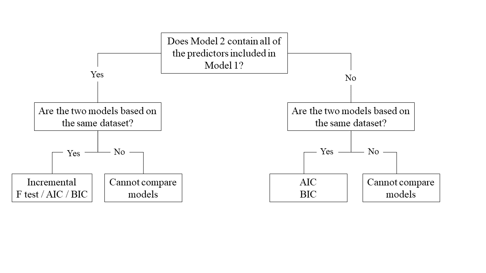
Nested vs Non-Nested Models
Nested Models
Consider that you have two regression models where Model 1 contains a subset of the predictors contained in the other Model 2 and is fitted to the same data. More simply, Model 2 contains all of the predictors included in Model 1, plus additional predictor(s). This means that Model 1 is nested within Model 2, or that Model 1 is a submodel of Model 2. These two terms, at least in this setting, are interchangeable - it might be easier to think of Model 1 as your null and Model 2 as your alternative.
Non-Nested Models
Consider that you have two regression models where Model 1 contains different variables to those contained in Model 2, where both models are fitted to the same data. More simply, Model 1 and Model 2 contain unique variables that are not shared. This means that Model 1 and Model 2 are not nested.
Incremental F-test
If (and only if) two models are nested, can we compare them using an incremental F-test.
This is a formal test of whether the additional predictors provide a better fitting model.
Formally this is the test of:
\(H_0:\) coefficients for the added/omitted variables are all zero.
\(H_1:\) at least one of the added/omitted variables has a coefficient that is not zero.
The \(F\)-ratio for comparing the residual sums of squares between two models can be calculated as:
\[
F_{(df_R-df_F),~df_F} = \frac{(SSR_R-SSR_F)/(df_R-df_F)}{SSR_F / df_F} \\
\quad \\
\]\[
\begin{align}
& \text{Where:} \\
\\
& SSR_R = \text{residual sums of squares for the restricted model} \\
& SSR_F = \text{residual sums of squares for the full model} \\
& df_R = \text{residual degrees of freedom from the restricted model} \\
& df_F = \text{residual degrees of freedom from the full model} \\
\end{align}
\]
In R
We can conduct an incremental \(F\)-test to compare two models by fitting both models using lm(), and passing them to the anova() function:
If we wanted to, for example, compare a model with just one predictor, \(x1\), to a model with 2 predictors: \(x1\), and \(x2\), we can assess the extent to which the variable \(x2\) improves model fit:
model1<-lm(y~x1, data =data_name)model2<-lm(y~x1+x2, data =data_name)anova(model1, model2)
For example:
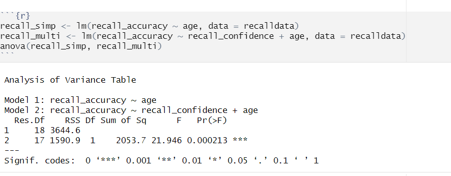
Model Comparisons using Incremental F-test
Example Interpretation
Recall confidence explained a significant amount of variance in recall accuracy beyond age \((F(1, 17) = 21.95, p < .001)\).
AIC & BIC
AIC (Akaike Information Criterion) and BIC (Bayesian Information Criterion) combine information about the sample size, the number of model parameters, and the residual sums of squares (\(SS_{residual}\)). Models do not need to be nested to be compared via AIC and BIC, but they need to have been fit to the same dataset.
\[
\begin{align}
& SS_{residual} = \text{sum of squares residuals} \\
& n = \text{sample size} \\
& k = \text{number of explanatory variables} \\
& \text{ln} = \text{natural log function}
\end{align}
\]
For both of these fit indices, lower values are better, and both include a penalty for the number of predictors in the model (although BIC’s penalty is harsher).
So how do we determine whether there is a statistical difference between two models? To evaluate our model comparisons, we need to look at the difference (\(\Delta\)) between the two values:
AIC: There are no specific thresholds to suggest how big a difference in two models is needed to conclude that one is substantively better than the other
BIC: Using the following \(\Delta BIC\) cutoffs (Raftery, 1995):
Value
Interpretation of Difference between Models
\(\Delta < 2\)
No evidence
\(2 > \Delta < 6\)
Positive evidence
\(6 > \Delta < 10\)
Strong evidence
\(\Delta > 10\)
Very strong evidence
In R
We can calculate AIC and BIC by using the AIC() and BIC() functions respectively:
Based on both AIC and BIC, the model predicting recall accuracy that included both recall confidence and age was better fitting \((\text{AIC} = 152.28; \text{BIC} = 156.27)\) than the model with age alone \((\text{AIC} = 166.86; \text{BIC} = 169.85)\).
General Formatting & Presenting of Results
LaTeX Symbols & Equations
By embedding LaTeX into RMarkdown, you can accurately and precisely format mathematical expressions, ensuring that they are not only technically correct but also visually appealing and easy to interpret.
APA format is a writing/presentation style that is often used in psychology to ensure consistency in communication. APA formatting applies to all aspects of writing - from formatting of papers (including tables and figures), citation of sources, and reference lists. This means that it also applies to how you present results in your Psychology courses, including DAPR2.
APA Formatting Guides
All results should be presented following APA guidelines.
Make sure to familiarise yourself with the above guides, and practice presenting your results following these rules.
Tables
We want to ensure that we are presenting results in a well formatted table. To do so, there are lots of different packages available (see Lesson 4 of the RMD bootcamp).
One of the most convenient ways to present results from regression models is to use the tab_model() function from sjPlot.
Creating tables via tab_model
Within tab_model(), there are lots of different ways that you can customise your table. The most common arguments that you should use are dv.labels, pred.labels, and title.
You can rename your DV and IV labels by specifying dv.labels and pred.labels. To do so, specify your variable name on the left, and what you would like this to be named in the table on the right. For title, you can simply specify in ““’s what you want your title to be e.g., title = "This is my title".
Here’s an example if I had fitted a model with the following information:
Model name = mdl_test
Model DV = cognitive_score
Model IVs = SES and age
mdl_test<-lm(cognitive_score~SES+age, data =data_name)
I want to change the names of SES and age to be socio-economic status and age - in years respectively. What we need to pay attention to here is the ordering of the IVs - the ordering in our lm() must match that in tab_model(). I also want to name my table Regression Table for Cognitive Scores Model. Here is how we would do this in R:
library(sjPlot)tab_model(mdl_test, pred.labels =c('Intercept', 'socio-economic status', 'age - in years'), title ="Regression Table for Cognitive Scores Model")
Cross-referencing is a very helpful way to direct your reader through your document, and the good news is that this can be done automatically in RMarkdown.
Cross Referencing
There are three key components to allow you to successfully cross-reference within your RMarkdown document:
A bookdown output format
A caption to your figure or table
A named/labeled code chunk
Once you have the above, you will be able to cross-reference using the syntax @ref(type:label), where label is the chunk name/label, and type is the environment being referenced (e.g. tab for table, fig for figure, etc.).
Yes, the error term is gone. This is because the line of best-fit gives you the prediction of the average recall accuracy for a given age, and not the individual recall accuracy of an individual person, which will almost surely be different from the prediction of the line.↩︎